Role Executive Art Editor, lead of the redesign
Team Over 18 years at the company, at times I coordinated about 75 people across these roles: designers, photographers, infographic artists, illustrators, and data journalists
Period 2021, in an 18-year tenure
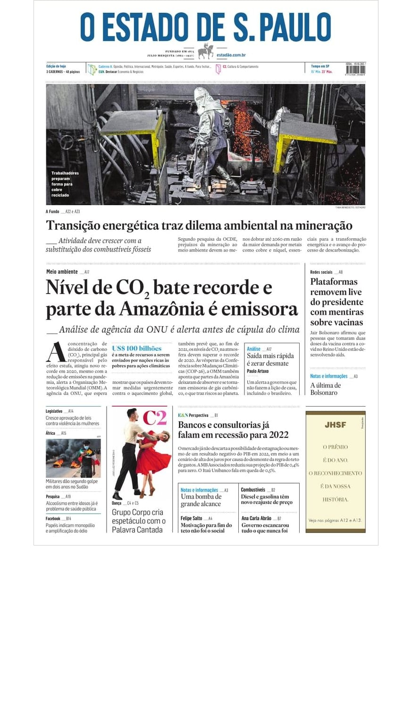
A newspaper redesign can look like a graphic-design exercise. The real challenge was systemic: evolve a daily information product while balancing readers, editorial priorities, industrial production, advertising, digital workflows, and business performance.
- 18
- Years at the paper, from 2005 to 2023
- R$7 million
- Estimated EBITDA increase in 2022, according to the business case
- 3
- Fronts the redesign had to serve at once: editorial, production, and advertising
A high-frequency interface before we called it product design
Every day the content changes completely. The interface cannot. Readers need to recognize hierarchy and scan dense information in seconds; editors need flexibility without rebuilding the language every morning. Create enough consistency to make the product intuitive, and enough flexibility to keep it expressive.
The format was decided with readers
I led the redesign across editorial, production, and advertising. The first thing to settle was the format. In the last of five surveys over eleven months, we sent three printed prototypes to 100 subscribers and interviewed them by video call. 89% preferred the Berliner format; all of them found it easier to hold, and 88% found it more comfortable to read. The new page kept practically the same column width, with larger type and more space between lines, and the launch edition walked readers through what was new.
From pages to reusable decisions
The page became 13 centimetres shorter and one column narrower. Typography, hierarchy, and the recurring modules were redrawn for the new grid, so editors build each page from known parts instead of starting from zero every morning.
Craft and business
The redesign supported production optimization and a new advertising strategy; its business case estimated a R$7 million increase in EBITDA in 2022.
The new format in print: front pages from its first weeks and prototype pages.
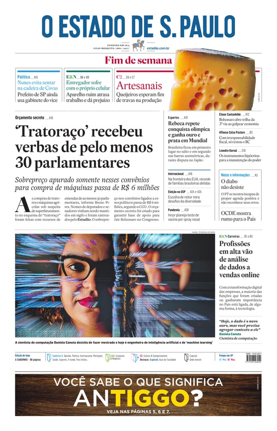
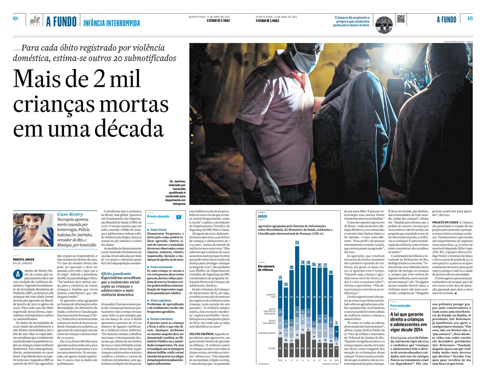
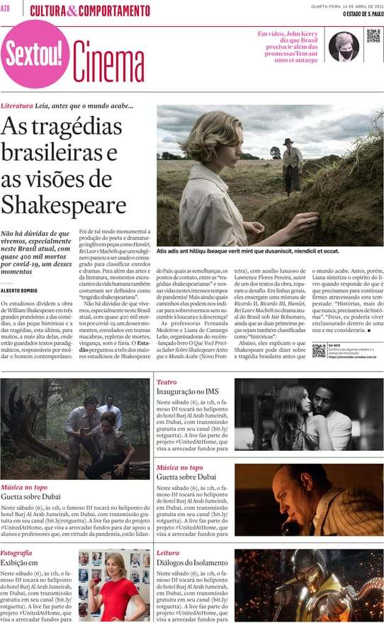
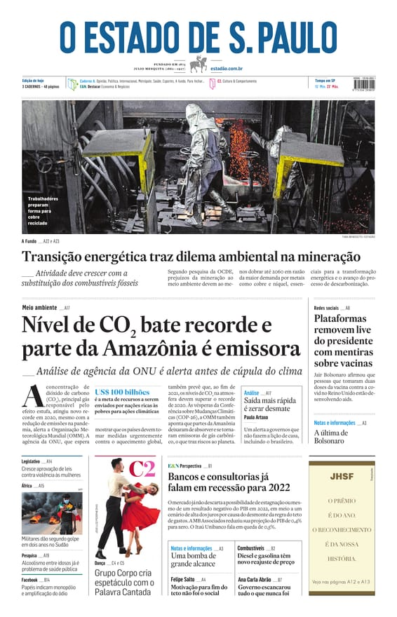
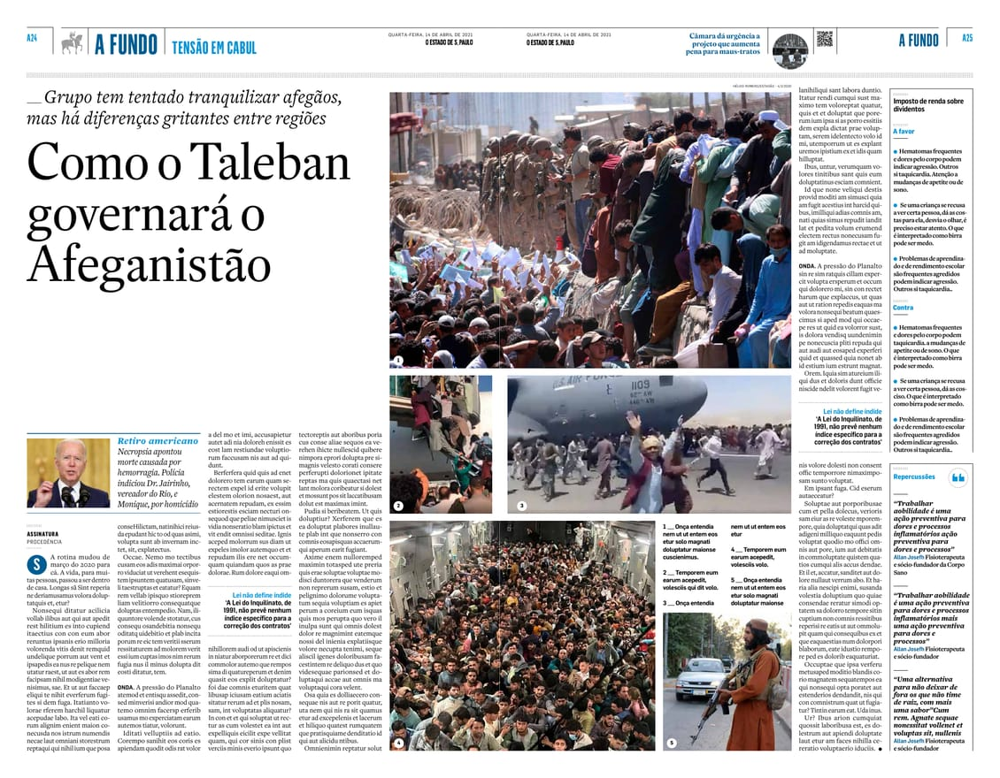
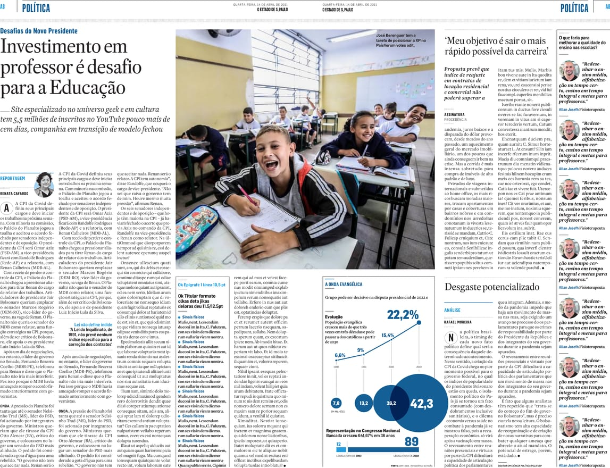
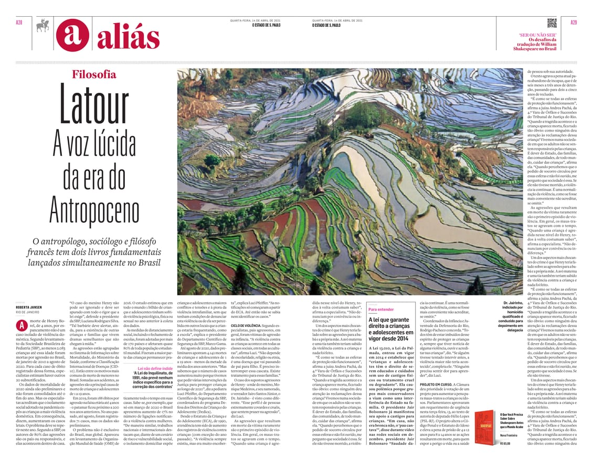
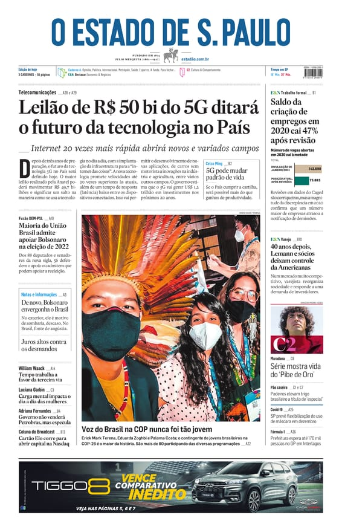
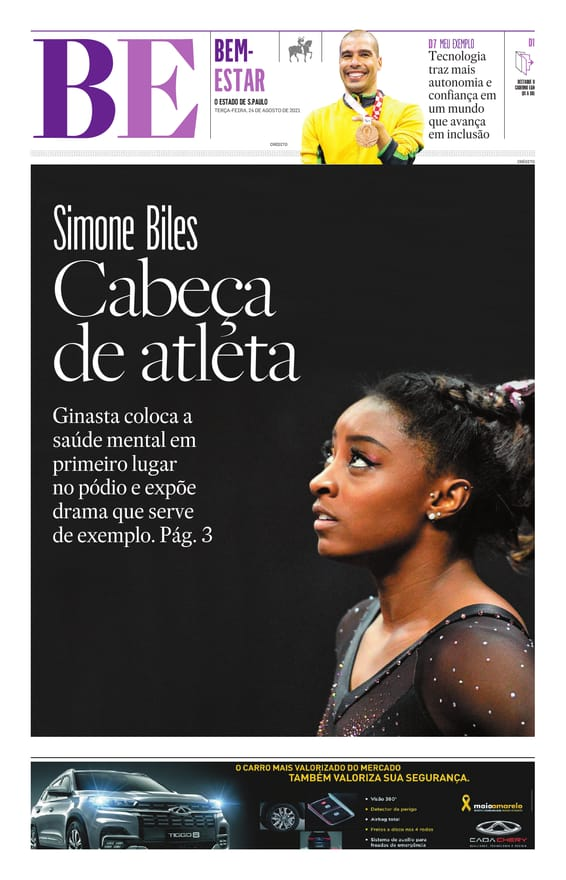
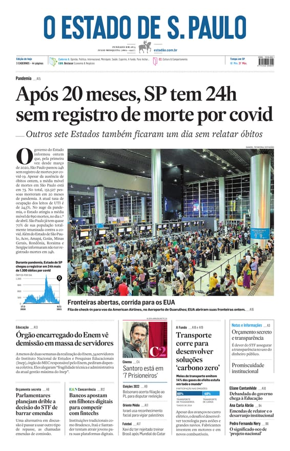